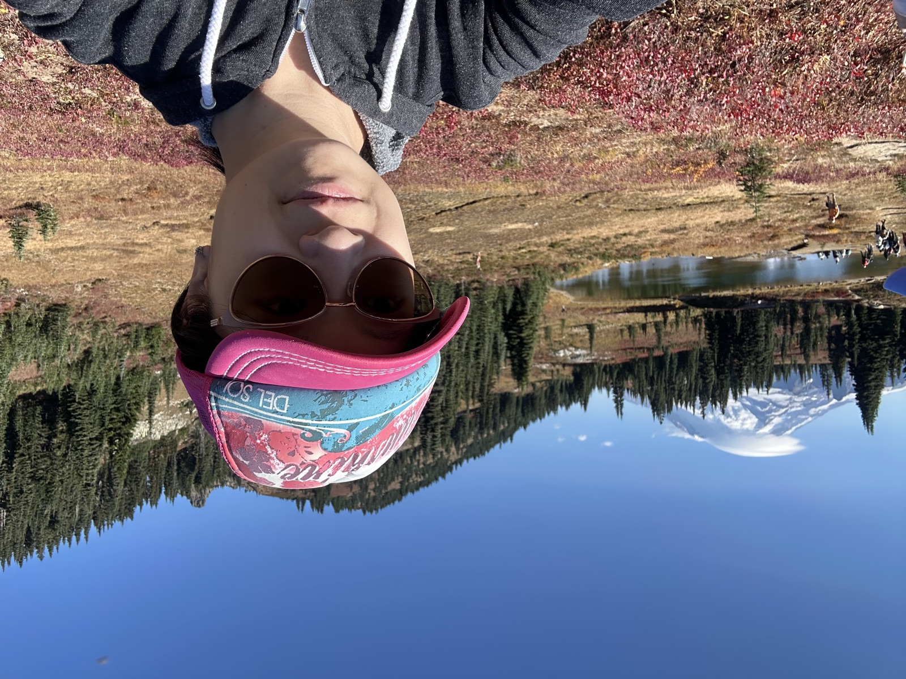

Hejia Zhang
I work on large language models and the agents built on them: how we measure them, what they learn from, and how they keep improving once they're out in the world. I was trained as an electrical engineer and neuroscientist, so I tend to look at learning as a system, not just a model.

⛰ found on trailsAbout
I'm a Research Scientist at Meta. These days I work on business agents: routing requests across models, and helping agents improve themselves from experience. Before that I founded and led Meta AI's centralized evaluation system, then took on the data flywheel so evaluation could drive training directly. I started on LLMs with factuality and long-context work on Llama. My first years at Meta went to integrity and recommendation, where I learned how large learning systems behave once they meet the real world.
I received a joint Ph.D. in Electrical Engineering and Neuroscience from Princeton in 2020, co-advised by Peter Ramadge, whose work spans signal processing, control and machine learning, and Ken Norman, who studies how brains learn and remember. My thesis developed machine learning methods for multi-subject fMRI, and I helped build the open-source BrainIAK toolkit. Before that, a B.S. in Electrical Engineering from Rice.
That mix of engineering and neuroscience still shapes the questions I care about most: how learning systems adapt from their own experience, and how many of them can work well together. Outside of work I build my own tools, mostly to get out of my own way.
Selective Publications
Large Language Models · Meta
-
AdvancedIF: Rubric-Based Benchmarking and Reinforcement Learning for Advancing LLM Instruction Following
Yun He, Wenzhe Li, Hejia Zhang, Songlin Li, Karishma Mandyam, … , Manaal Faruqui
-
Bradley-Terry Policy Optimization for Generative Preference Modeling
Shengyu Feng, Yun He, Shuang Ma, … , Hejia Zhang, Karthik Abinav Sankararaman, Han Fang, Yiming Yang, Manaal Faruqui
-
Improving Model Factuality with Fine-grained Critique-based Evaluator
Yiqing Xie, Wenxuan Zhou, Pradyot Prakash, Di Jin, Yuning Mao, … , Carolyn Rose, Daniel Fried, Hejia Zhang
-
Multi-IF: Benchmarking LLMs on Multi-Turn and Multilingual Instructions Following
Yun He, Di Jin, Chaoqi Wang, Chloe Bi, Karishma Mandyam, Hejia Zhang, … , Han Fang, Sinong Wang
-
The Perfect Blend: Redefining RLHF with Mixture of Judges
Tengyu Xu, Eryk Helenowski, Karthik Abinav Sankararaman, … , Hejia Zhang, … , Sinong Wang, Han Fang
-
Effective Long-Context Scaling of Foundation Models
Wenhan Xiong, Jingyu Liu, Igor Molybog, Hejia Zhang, Prajjwal Bhargava, … , Mike Lewis, Sinong Wang, Hao Ma
Machine Learning & Neuroscience · Princeton
-
BrainIAK: The Brain Imaging Analysis Kit
Manoj Kumar, Michael J. Anderson, James W. Antony, Christopher Baldassano, … , Hejia Zhang, … , Kenneth A. NormanAperture Neuro2022
-
BrainIAK tutorials: User-friendly learning materials for advanced fMRI analysis
Manoj Kumar, Cameron T. Ellis, Qihong Lu, Hejia Zhang, et al.PLoS Computational Biology2020
-
Incorporating structured assumptions with probabilistic graphical models in fMRI data analysis
Ming Bo Cai, Michael Shvartsman, Anqi Wu, Hejia Zhang, Xia Zhu
-
Multitask Metric Learning: Theory and Algorithm
Boyu Wang, Hejia Zhang, Peng Liu, Zebang Shen, Joelle PineauAISTATS · Oral2019
-
System Design of Extreme Multi-label Query Classification using a Hybrid Model
Xianjing Liu*, Hejia Zhang*, Mingkuan Liu, Alan Lu (* equal contribution; work done at eBay)SIGIR Workshop on eCommerce2019
-
Transfer learning on fMRI datasets
Hejia Zhang, Po-Hsuan Chen, Peter J. RamadgeAISTATS2018
-
Segmenting Brain Tumors with Symmetry
Hejia Zhang, Xia Zhu, Theodore L. Willke
-
A Searchlight Factor Model Approach for Locating Shared Information in Multi-Subject fMRI Analysis
Hejia Zhang, Po-Hsuan Chen, Janice Chen, Xia Zhu, Javier S. Turek, Theodore L. Willke, Uri Hasson, Peter J. Ramadge
-
A Convolutional Autoencoder for Multi-Subject fMRI Data Aggregation
Po-Hsuan Chen, Xia Zhu, Hejia Zhang, Javier S. Turek, Janice Chen, Theodore L. Willke, Uri Hasson, Peter J. Ramadge
Show earlier work & abstracts ↓Hide earlier work ↑
- Multi-subject fMRI data factor analysis using BrainIAK
Hejia Zhang, Po-Hsuan Chen, Peter J. RamadgeSfN Annual Meeting2017
- Learning Factor Models Using Multi-dataset, Multi-subject fMRI Data
Hejia Zhang, Po-Hsuan Chen, Peter J. RamadgeCRCNS2017
- Searchlight Factor Models in Multi-Subject fMRI Analysis
Hejia Zhang, Po-Hsuan Chen, Janice Chen, Xia Zhu, Javier S. Turek, Theodore L. Willke, Uri Hasson, Peter J. RamadgeCRCNS2016
- Attention to automatic movements in Parkinson's disease: Modified automatic mode in the striatum
Tao Wu, Jun Liu, Hejia Zhang, Mark Hallett, Zheng Zheng, Piu ChanCerebral Cortex2015
- Scale- and orientation-invariant keypoints in higher-dimensional data
Blaine Rister, Daniel Reiter, Hejia Zhang, Daniel Volz, Mark Horowitz, Refaat E. Gabr, Joseph R. CavallaroIEEE ICIP2015
- An Efficient Distributed Approach for Processing Sparse Shift-Diagonal Matrices
Hejia Zhang, Azalia Mirhoseini, Farinaz KoushanfarRice Undergraduate Research Symposium2013
Experience
Industry
- 2019 — nowResearch Scientist · MetaJoined as a research intern in Integrity (summer 2019), full-time since 2020.
- Integrity2019–2021 — end-to-end detection of the most severe harmful content: training data, model ensembles, offline evaluation and monitoring.
- Recommendation2021–2023 — a user–content understanding model, shipped by a team I led as ranking features across Instagram and Facebook.
- Llama factuality & long context2023 — cutting hallucinations; Llama 2 Long.
- Founder & tech lead, Meta AI evaluationQ4 2023–Q1 2025 — a centralized evaluation system built from scratch (auto-judges, benchmarks, online proxies, failure-mode mining) that supported every Meta AI launch.
- Tech lead, evaluation + data flywheelQ1–Q3 2025 — letting what we measure automatically drive what models learn.
- Self-improving agents & model routingQ3 2025–now — routing requests across models, and agents that improve the router themselves.
- Summer 2018Applied Research Scientist Intern · eBayMulti-label query classification.
- Summer 2017Graduate Technical Intern · IntelNeuroimaging analysis methods and implementation.
Education
- 2014 — 2020Ph.D., Electrical Engineering & Neuroscience · Princeton UniversityCo-advised by Peter J. Ramadge & Ken Norman. Machine learning for multi-subject fMRI analysis.
- 2010 — 2014B.S., Electrical Engineering · Rice UniversitySumma cum laude · Minor in Computational and Applied Mathematics.
Off the clock
An amateur in all four, and planning to stay that way.